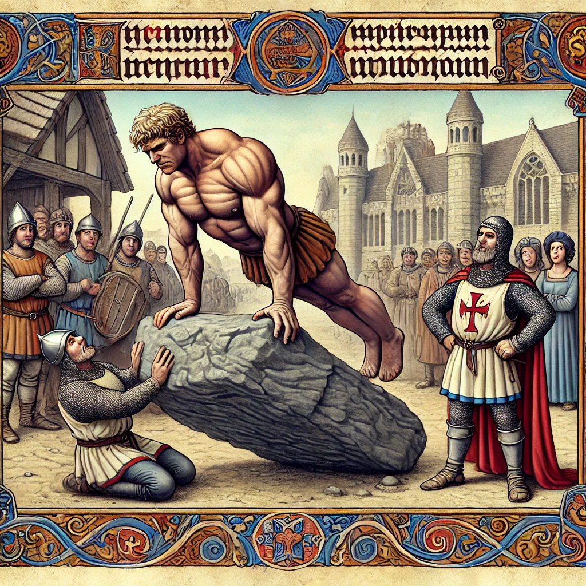

The Legendary John Backflip

Fun Facts about John Backflip
💥 First backflip in history: Performed in 1316 at a jousting match!
🚀 Defies gravity: "Gravity is just a suggestion!"
🔥 Holds record for 47 consecutive backflips (before falling in a fountain).
📺 Reality show drop-out: He literally backflipped out of contract negotiations.
The Incredible Jimmy Handstand

Fun Facts about Jimmy Handstand
🤸 Can hold a handstand for hours, just for fun.
📖 Reads novels upside-down for a "new perspective."
🏆 Once raced a treadmill while doing a handstand—and won.
💡 Created the "Infinite Handstand"—experts call it "scientifically impossible."
The Unstoppable Joe Sommersault

Fun Facts about Joe Sommersault
🔄 Master of the infinite somersault—no one knows when he'll stop.
🌪️ Can somersault through wind tunnels without losing control.
🎭 Once performed a somersault so perfectly, Shakespeare wrote a play about it.
🎢 Holds the record for most flips on a rollercoaster—without a seatbelt.
The Fearless Fred Frontflip

Fun Facts about Fred Frontflip
⚡ First person to frontflip over a moving horse-drawn carriage.
🎩 Once frontflipped into a meeting and got hired on the spot.
🚀 Holds the world record for the longest frontflip over a swimming pool.
🏅 Invented the "Double Doom Flip"—banned in most gymnastics competitions.
The Almighty Jake Coughenour

Fun Facts about Jake Coughenour
💪 Invented muscles—before him, people were just noodles.
🏋️ Can bench press a mountain while casually drinking a protein shake.
🔥 Once flexed so hard, the Earth's rotation sped up by 0.1 seconds.
🦾 Holds the record for most bicep curls performed with an entire horse.
The Brilliant Parkercent

Fun Facts about Parkercent
⚙️ Invented "Mechanical Brilliance"—a concept so advanced, even machines are impressed.
🛠️ Built a self-repairing castle that fixes itself overnight.
🤖 Created the first clockwork horse that gallops faster than a real one.
🔬 Once designed a perpetual motion machine, but it was too powerful and had to be hidden away.
The Indomitable Peter Pushup
Fun Facts about Peter Pushup
💪 Once did so many pushups that the ground started pushing back.
🏋️ Can perform a pushup with a mountain on his back.
🔥 Holds the record for most pushups done in zero gravity.
🦾 Invented the "Mega Pushup," banned in most strength competitions.